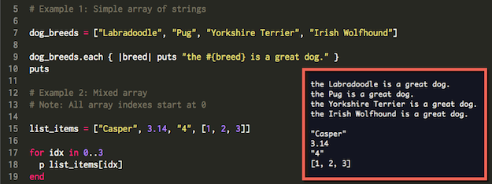

Arrays and Hashes
October 5, 2015 -- Let's contain this
Overview
This week we learned about storing, retrieving and acting on different sets of objects within our programs. Specifically, we learned about arrays and hashes. We learned what they are, when to use them, and why we use them. Let’s start with what they are.
Arrays and indexes
At their most basic level, an array is a container that holds different objects (or sets of objects) so you can easily get to and use them or change them whenever you need to. However, you don’t just toss things randomly into an array and hope that you will be able to find whatever you’re looking for when you need it later.
When you put something in an array, each object is stored in a uniquely numbered position. That way as long as you have the correct number (index), it’s very easy to access, or even change, any object in any position. But what if you don’t know the numbered index of the information you need, or you want to interact with more than one object at once?
It’s possible to look through an entire array or any subset of an array by telling the computer to look at a particular range of numbered positions. That’s called “iterating over an array” and as you can imagine it’s a very handy option to have.
Another great feature of arrays is that each index can hold almost any kind of object. They can be numeric, alphabetic, statements of true or false (Boolean values), hashes, and even other arrays (among other things). The last one is where things get really interesting because it’s possible to represent more than one dimension of values within an array.
In summary, arrays are linear sets, and they are great for storing lists where the order of things is important. They can also be accessed randomly or in sequence (front to back or back to front) starting and ending at any points within their index.
Hashes and hashmaps
Hashes are another type of container, but instead of using a numbered index, hashes let you use practically anything as their index. In other words, hashes can map one object (called the key) to another object (called the value). These key/value pairs can then be used to logically relate two different sets of data, also called a hashmap.
Hashmaps are powerful because unlike an array, you no longer need to remember an arbitrary index in order to retrieve the object that you are looking for. Hashes are all about the relationship between two items and all you need to know is the contents of a key to unlock its associated value.
Of course, and this is not a bad thing, all hash keys must be unique within a given hashmap. That means the same object can be listed more than once (as a value for multiple keys), but each value will require its own unique key to be unlocked.
For example, if you imagine all the cars within a theater’s valet service as a hashmap, each car can only belong to one claim check holder. The service can handle more than one 2015 Toyota Prius (value), but each claim check (key) will only provide access to a specific car (value).
That’s not a perfect example, but it works for demonstrating that hashes and hashmaps are really useful when:
- We want to associate something (cars/values) with a specific identifier (claim checks/keys)
- We plan on adding and removing elements from the set (cars and claim checks)
- We don’t really care about the order in which things are stored.
- Speed of lookup is really important. Hash tables are generally faster than arrays
Some Ruby code for your consideration
Array example
The following are 2 simple arrays. The first is a list of strings and the second is list of different object types. We iterate over each array so you can see their contents in the red box on the right. Please note the second example contains a string, a float (number with a decimal point), an integer represented as a string, and a separate array containing 3 integers:

Hash example
And here's an example of a hash that you can cut and paste to play around with:
pet_names = { :cat => "Star",
:dog => "Ginger",
:lion => "Haskell",
:fish => "Float"
}
puts pet_names[:lion]
In conclusion, both hashes and arrays are of great value to programmers. They enable us to access and re-use multiple objects with ease and context. In the case of arrays, that context is the index and the sequence of data contained within. While in the case of hashes, that context is the relationship between key/value pairs.